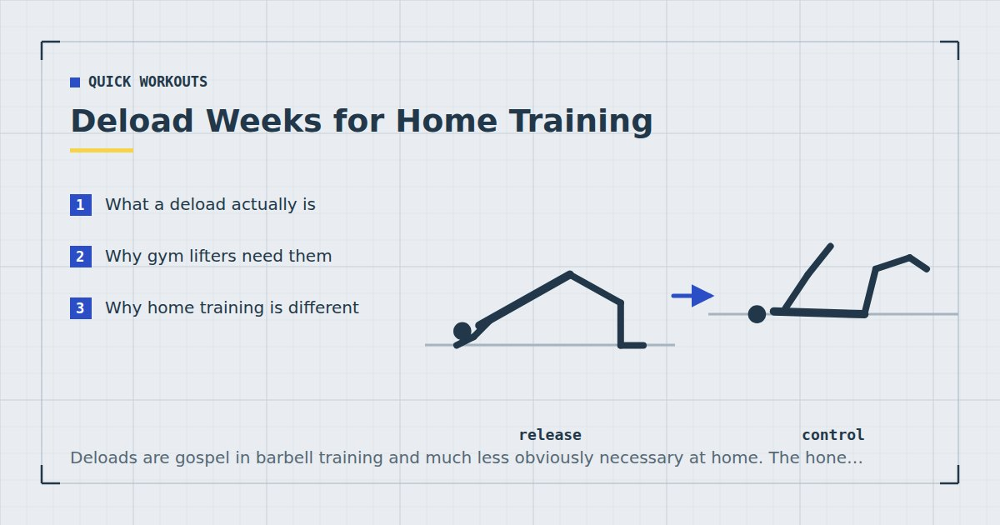

Quick Workouts & Plans
Deload Weeks for Home Training: When and How
Deloads are gospel in barbell training and much less obviously necessary at home. The honest answer is that most bodyweight trainees need them rarely — but when they do, they really do.

A deload is a planned reduction in training stress — usually a week — taken to let accumulated fatigue dissipate so that performance can rebound. In barbell training it is close to standard practice. In home bodyweight training it is imported wholesale from that world, often without anyone asking whether the reasoning transfers.
Mostly it transfers partially. Here is which parts.
What a deload actually is
The underlying model is straightforward. Training produces both fitness and fatigue. Fitness accumulates slowly and decays slowly; fatigue accumulates quickly and decays quickly. Performance at any moment reflects the difference between them.
If you train hard for long enough, fatigue accumulates faster than it clears, and performance drifts downward even though underlying fitness is still improving. Reduce the training stress for a week and the fatigue clears while the fitness largely remains, so performance rebounds — usually to a level above where it was before.
That is the theory, and it is well established for high-load strength training. The question is how much of it applies when the load is your own bodyweight.
Why gym lifters need them
Three factors drive fatigue accumulation in barbell training, and they compound.
Absolute load. A heavy squat places large forces through joints, connective tissue and the spine. Connective tissue adapts more slowly than muscle, so it accumulates stress over weeks in a way that muscle does not.
Systemic demand. Near-maximal lifts are demanding on the central nervous system and on the whole body in a way that submaximal work is not.
Progressive overload is externally driven. A programme that adds weight every week forces the stress upward whether or not you are recovering from the last increment. The schedule keeps pushing even when you are not adapting.
Why home training is different
All three of those are weaker at home, and the third is almost absent.
Bodyweight loads are lower in absolute terms, so joint and connective tissue stress accumulates more slowly. Sets are usually taken with more repetitions and less absolute force, which is systemically less demanding even when it feels harder in the moment.
Most importantly, bodyweight progression is self-limiting. You cannot add five kilos to a push-up. Progression comes from harder variations, and you only move to a harder variation when the current one has genuinely become manageable. That built-in gate means the stress does not outrun your adaptation the way an externally prescribed loading schedule can.
The practical result: a home trainee doing three sessions a week of bodyweight work will typically go considerably longer before needing a deload than a lifter squatting heavy three times a week. Many never accumulate enough fatigue to require one at all.
Training close to failure is the one thing that changes this calculation. Sets taken to failure cost disproportionately more recovery than sets stopped short, without a proportional increase in stimulus.1 A home trainee taking every set to absolute failure — which bodyweight training encourages, because failure is the only obvious stopping point — can accumulate fatigue as fast as any barbell lifter.
The signs you actually need one
Rather than deloading on a schedule, most home trainees are better off deloading on evidence. The signals worth acting on, roughly in order of reliability:
Performance declining across two or more consecutive sessions at the same variation and tempo. This is the clearest signal and the reason to track reps on your first exercise, as described in tracking progress without a gym or scale.
Persistent soreness that has not cleared by the next session of that type. Note that ordinary soreness after a new stimulus is not this; the signal is soreness that stops clearing when it used to.
Joints that ache rather than muscles. Muscular fatigue is normal. Persistent elbow, shoulder, knee or wrist discomfort is the connective tissue signal, and it warrants a reduction rather than pushing through.
Sleep and mood changes alongside the above. Sleep and training interact in both directions,2 and disturbed sleep during a heavy training block is worth taking seriously rather than treating as unrelated.
Dreading sessions you previously enjoyed. Softer, but a real signal. Sustained aversion often precedes measurable performance decline.
Deload on evidence, not on the calendar. At home, the calendar version usually removes training you were recovering from perfectly well.
How to run a deload week
The most common mistake is stopping entirely. A week of nothing lets fatigue clear, but it also removes the movement stimulus and, more importantly, breaks the habit — which for home training is a far more dangerous thing to lose than a week of volume.
Better: keep the sessions and the schedule, and reduce the intensity.
- Keep the same number of sessions on the same days. The routine stays intact.
- Halve the sets. Three sets becomes two, four becomes two.
- Stop well short of failure. Four or five repetitions in reserve on everything. This is the single most important change.
- Drop back one variation. If you have been doing decline push-ups, do standard ones.
- Keep walking and mobility work unchanged. Neither contributes meaningfully to the fatigue you are clearing.
One week is almost always enough. If performance has not rebounded after two, the problem is probably not training fatigue — look at sleep, food intake and life stress before adding more rest.
Scheduling them, or not
If you train three days a week with sets mostly stopped short of failure, you likely do not need scheduled deloads. Take one when the signals appear, which might be every three or four months, or not at all.
If you train five or six days a week, or take most sets to failure, plan one every six to eight weeks. At that volume the fatigue will accumulate whether or not you notice it, and a planned reduction is cheaper than the performance dip that eventually forces one.
There is also a version of this that has nothing to do with physiology: taking a lighter week deliberately when life is unusually busy. That is not a deload in the technical sense, but it is a good way to keep a routine intact through a difficult fortnight instead of missing sessions entirely and then struggling to restart — the problem covered in how to restart after missing two weeks.
Where to go next
If you are unsure whether fatigue or something else is limiting you, recovery for busy people covers the wider picture. For how much volume is worth carrying in the first place, see how many days a week you should work out.
Frequently asked questions
Do I need a deload week for bodyweight training?
Less often than a barbell lifter does. Bodyweight loads are lower in absolute terms and progression is self-limiting, so fatigue accumulates more slowly. Many home trainees doing three sessions a week never need a scheduled deload.
How often should I deload?
If you train three days a week and mostly stop short of failure, deload when the signs appear rather than on a schedule. If you train five or six days a week or take most sets to failure, plan one every six to eight weeks.
What are the signs I need a deload?
Performance declining across two or more consecutive sessions at the same variation, soreness that no longer clears before the next session, aching joints rather than muscles, disturbed sleep during a heavy block, and sustained dread of sessions you used to enjoy.
Should I stop training completely during a deload?
No. Keep the same sessions on the same days and reduce the intensity instead — halve the sets, stop four or five reps short of failure, and drop back one variation. Stopping entirely clears fatigue but also breaks the habit, which is the more costly loss at home.
How long should a deload week be?
One week is almost always sufficient. If performance has not rebounded after two, training fatigue is probably not the limiting factor and sleep, food intake or life stress are worth examining first.
Sources and further reading
- Vieira AF, Umpierre D, Teodoro JL, et al. “Effects of Resistance Training Performed to Failure or Not to Failure on Muscle Strength, Hypertrophy, and Power Output: A Systematic Review With Meta-Analysis.” Journal of Strength and Conditioning Research, 2021. PubMed.
- Bonnar D, Bartel K, Kakoschke N, Lang C. “Sleep Interventions Designed to Improve Athletic Performance and Recovery: A Systematic Review of Current Approaches.” Sports Medicine, 2018;48(3):683–703. PubMed.
- Schoenfeld BJ, Ogborn D, Krieger JW. “Dose-response relationship between weekly resistance training volume and increases in muscle mass: A systematic review and meta-analysis.” Journal of Sports Sciences, 2017;35(11):1073–1082. PubMed.
- Dupuy O, Douzi W, Theurot D, Bosquet L, Dugué B. “An Evidence-Based Approach for Choosing Post-exercise Recovery Techniques to Reduce Markers of Muscle Damage, Soreness, Fatigue, and Inflammation: A Systematic Review With Meta-Analysis.” Frontiers in Physiology, 2018;9:403. PubMed.
Comments
Comments are not enabled yet. Add a hosted comment embed (Disqus, Commento, Giscus) inside this container when you are ready.